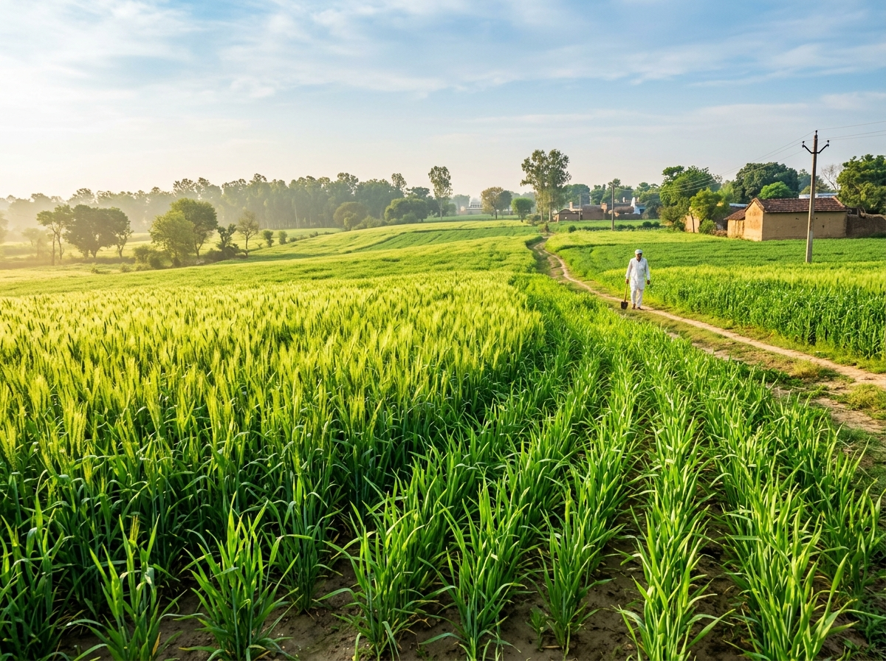
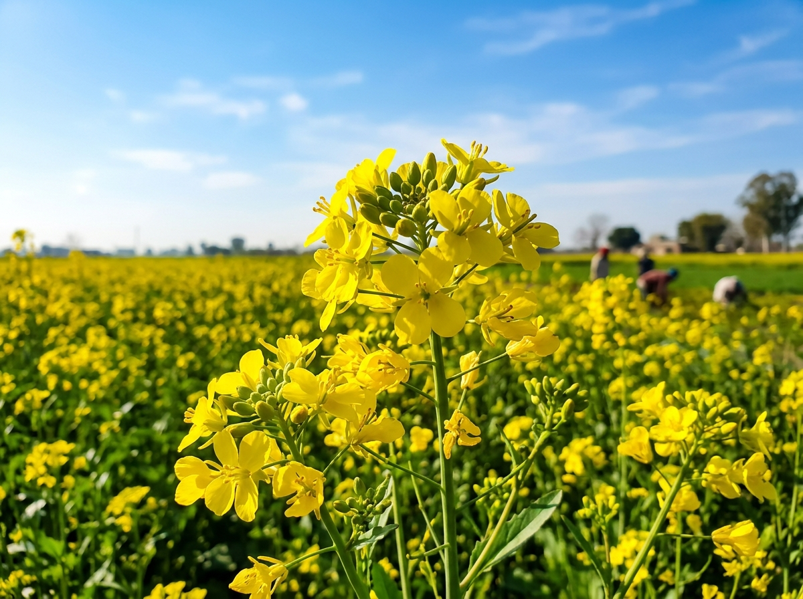
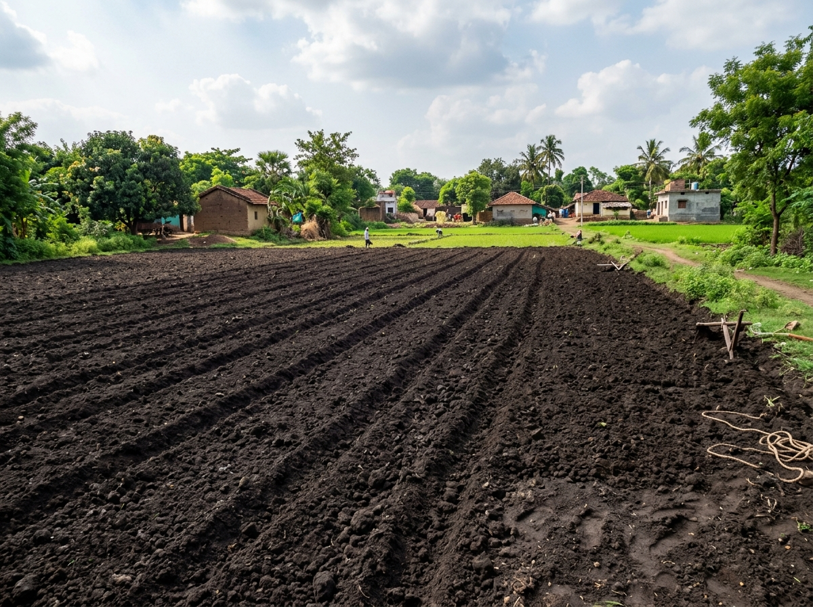

Meerut, Uttar Pradesh
▾
Scope Notice
Total Land Holdings
5.5 Acres
3 Registered Plots
Active Plantings
Wheat, Mustard
Rabi Season 2024–25
Yield Projection
44 - 54 Q/Ha
Wheat (Daurala Farm)
Est. Market Value
₹1,13,500
Benchmark MSP ₹2,275/Q (Projection)
Soil Health Index
Optimal
NPK: 140:40:220 • pH 7.2 (नमूना डेटा / Demo Baseline)
My Fields (मेरे खेत)
+ Add Field
Daurala Farm
Active

Hastinapur Plot
Active

Sardhana Area
Planned
Total 3 verified plots registered under Meerut district
Yield Forecast (पैदावार पूर्वानुमान)
44 - 54
Q/Ha (Expected)
Season: Rabi 2024–25 • District Baseline: Meerut (39.2 Q/Ha)
Official UP APY Records (2018–2023)
Evaluated XGBoost Forecast (2024–2025)
मॉडल एवं डेटा सीमाएं (Model & Data Limitations): Plot forecasts generated by evaluated XGBoost Pipeline (R² = 0.9621, MAE = 0.827 Q/Acre). Historical district baseline achieves R² = 0.7364, MAE = 0.1892 t/ha on 2021-22 out-of-time test. Actual plot yield may vary with micro-soil and weather anomalies.
Meerut, UP
Updated --:--
Feels --°C
•
Humidity --%
•
Wind -- km/h
Personalised Agronomic Advisory
Grounded in ICAR & IMD Agromet Protocols
Crop Symptom & Field Vigilance Protocol
Evidence-based steps (Not certified lab diagnosis)
Select visual symptoms observed in your field to generate verified management next steps:
No symptoms / Healthy crop
Yellow powder / stripe rust signs
Aphids / Chepa insects on shoots
Leaf yellowing / tip necrosis
Soil Baseline Notice: District soil parameters are regional aggregates for Meerut (Alluvial Sandy Loam, medium organic carbon). They do not represent farm-specific lab measurements. For precise fertilizer dosages, test your soil via the Soil Health Card Scheme.
Institutional Programs & Schemes
Directory →
PM-KISAN Samman Nidhi
Direct benefit transfer installment verified and linked
→
PM Fasal Bima Yojana (PMFBY)
Rabi season coverage active with 72-hour claim notification window
→
Soil Health Card Protocol
Laboratory test schedule due for renewal this agricultural cycle
→
Kisan Credit Card (KCC)
Concessional 4% crop input working capital facility
→